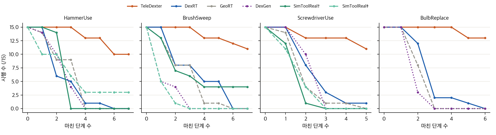
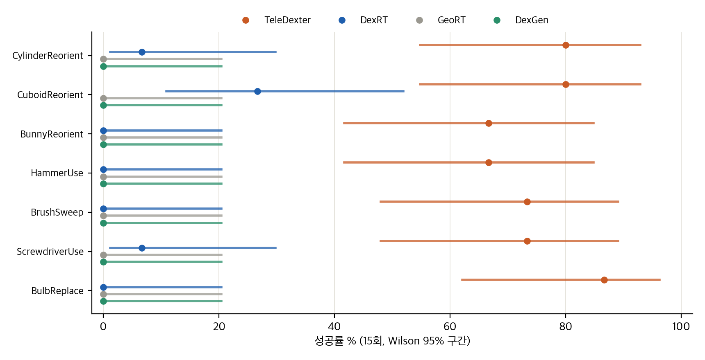
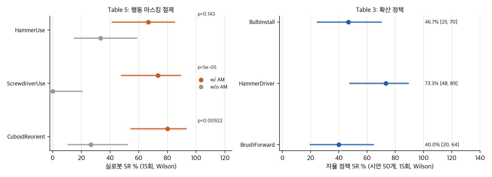
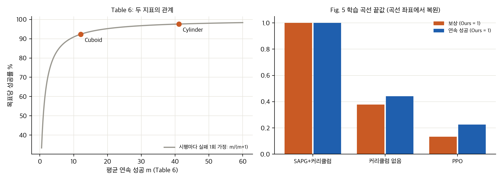

04 §4).출처는 모두 arXiv:2607.11481 v1의 절·식·표 번호입니다. "부록 X.Y"는 같은 PDF의 Supplementary Materials입니다.
| 항목 | 내용 |
|---|---|
| 제목 | Towards Human-level Dexterous Teleoperation |
| 저자 | Puhao Li*, Zeyuan Chen*, Yingying Wu*, Pengkun Wei, Yuyang Li, Tianyu Wang, Jiaxiao Shi, Mingrui Yu, Baoxiong Jia, Song-Chun Zhu, Tengyu Liu†, Siyuan Huang† (칭화대, BIGAI, 북경대). * 공동 기여, † 교신 |
| arXiv | 2607.11481 [cs.RO], v1 하나뿐(2026-07-13 제출, 27쪽, 본문 9쪽 + 부록). 2026-11-24 abs 페이지에서 버전 이력을 확인했고 v2 이상은 없습니다. 그래서 버전 간 차이는 없습니다 |
| 프로젝트 페이지 | https://bigai-dex.github.io/blog/teledexter/ (2026-07-12 날짜, 영상과 표 1 복사본) |
| 코드 | 공식 코드를 찾지 못했습니다(02 §2) |
| 라이선스 | arXiv abs 페이지의 "view license"가 http://arxiv.org/licenses/nonexclusive-distrib/1.0/(arXiv 비독점 배포)를 가리킵니다. CC BY가 아닙니다. PDF 첫·끝 쪽에서 ©, copyright, All rights reserved 같은 권리 표기는 찾지 못했습니다 |
| 학회 | CoRL 2026 포스터. 저장소의 conferences/corl2026/papers.json(corl.org 공식 채택 목록, 2026-11-14 수집)에서 poster, 세션 "Poster post-p3"(2026-11-11 10:30–12:00), 포스터 번호 44로 확인했습니다. 논문 PDF에는 학회 서식 표기가 없고 arXiv comments에는 프로젝트 주소만 있습니다 |
문제. 사람은 한 손 안에서 물체를 돌리고 잡는 방식을 바꾸고 손가락을 번갈아 움직여(finger gaiting) 도구를 씁니다. 기존 텔레옵은 (a) 사람 손 관절을 로봇 관절로 옮기는 운동학 리타게팅(DexPilot, AnyTeleop 등)이라 접촉력과 물체 관성을 무시해 물체를 떨어뜨리고, (b) DexGen([13])은 시뮬레이션에서 만든 파지 전이를 학습 목표로 쓰는 생성형 행동 사전분포라 물리적으로 맞지 않을 수 있고 폐루프에서 오차가 누적된다고 지적합니다(1절, 2절).
주장. 조작자가 손끝 위치와 물체 자세를 목표로 주고(hand-object co-tracking), 시뮬레이션에서 RL로 학습한 저수준 제어기가 접촉 동역학을 맡습니다. 세 가지가 핵심입니다(1절).
결과 요약. SharpaWave(22자유도, 5손가락) 7개 과제에서 평균 SR 75.2%, TP 87.1%(표 1). 기준선(DexRT, GeoRT, DexGen)은 평균 SR 5.7%, 0%, 0%. LeapHand(16자유도, 4손가락)에서도 같은 파이프라인이 동작(표 2). 수집한 시연 50개로 확산 정책을 학습해 3개 과제를 자율 수행(표 3).
모든 양은 손목 프레임에서 표현합니다. 팔은 사람 손목 자세를 IK로 따라갑니다. 정책은 a_t = π_θ(o_t, g_t)이고 g_t = (p̂_tip, T̂_obj)는 목표 손끝 위치(N_f × 3)와 목표 물체 자세(SE(3))입니다. 텔레옵 중에는 MoCap이 실시간으로 잰 사람 손끝과 물체 자세가 g_t가 됩니다.
r_t = 1_reach(t) · w_step(t) · r_score(t) + α_dense · r_dense(t) − c_time
03 V11).03 V11). 관절 속도와 접촉력은 의도적으로 제외했고, 중력 방향은 손목 프레임에서 유일한 세계 기준 단서입니다. 촉각은 없습니다.03 K5).각 스텝에서 마스크가 켜져 있지 않으면 확률 p_mask = 0.15로 새 마스크를 뽑습니다. 관절 3개를 비복원 추출하고 지속 시간 d ~ U{1, d_max} 동안 그 관절들의 실행 행동을 직전 명령으로 고정합니다: ã_t = m_t ⊙ a_t + (1 − m_t) ⊙ ã_(t−1). 의도는 "일부 관절이 낡은 명령을 유지해도 성공"하도록 하는 행동 공간 정규화입니다.
q*(1:T) = argmin_q Σ_t [ L_vec(t) + λ_surf L_surf(t) + λ_pen L_pen(t) + λ_col L_col(t) ] + λ_smooth L_smooth
1단계는 벡터 리타게팅(Adam, lr 10⁻³, 6,000회), 2단계는 SDF 기반 표면 인력(임계 τ_surf 안의 손 표면점을 물체 표면으로), 관통 벌칙, 손가락 간 구-구 자기충돌, cuRobo 평활 에너지(Adam, lr 3×10⁻³, 160회, 기울기 노름 1.0 클립). λ_surf = 10, λ_pen = 2, λ_col = 10, λ_smooth = 0.1. τ_surf는 "2"로만 적혀 있고 단위가 없습니다(03 K13).
NOKOV 광학 MoCap이 30 Hz로 손목, 손끝(실시간용 간이 장갑), 물체 6D 자세를 줍니다. 파지 전 접근과 첫 접촉은 운동학 벡터 리타게팅이 맡고, 안정 접촉이 생기면 조작자가 co-tracking 정책으로 전환합니다(3.3절, B.3.2). 전환 방법(버튼 등)은 적혀 있지 않습니다.
| 과제 | DexRT | GeoRT | DexGen | SimToolReal† | SimToolReal‡ | TeleDexter |
|---|---|---|---|---|---|---|
| CylinderReorient | 6.7 / 37.8 | 0.0 / 24.4 | 0.0 / 31.1 | — | — | 80.0 / 86.7 |
| CuboidReorient | 26.7 / 51.1 | 0.0 / 33.3 | 0.0 / 28.9 | — | — | 80.0 / 86.7 |
| BunnyReorient | 0.0 / 35.6 | 0.0 / 31.1 | 0.0 / 26.7 | — | — | 66.7 / 77.8 |
| HammerUse | 0.0 / 26.7 | 0.0 / 30.5 | 0.0 / 26.7 | 0.0 / 27.6 | 20.0 / 36.2 | 66.7 / 86.7 |
| BrushSweep | 0.0 / 39.0 | 0.0 / 29.5 | 0.0 / 8.6 | 26.7 / 41.9 | 0.0 / 5.7 | 73.3 / 89.5 |
| ScrewdriverUse | 6.7 / 37.3 | 0.0 / 25.3 | 0.0 / 33.3 | 0.0 / 17.3 | 0.0 / 20.0 | 73.3 / 86.7 |
| BulbReplace | 0.0 / 35.6 | 0.0 / 25.6 | 0.0 / 20.0 | — | — | 86.7 / 95.6 |
| 평균 | 5.7 / 37.6 | 0.0 / 28.5 | 0.0 / 25.0 | 8.9 / 28.9 | 6.7 / 20.6 | 75.2 / 87.1 |
SimToolReal 평균은 세 과제 평균이고, 같은 세 과제의 TeleDexter 평균은 SR 71.1, TP 87.6입니다(03 V2). 표 2(LeapHand, TeleDexter만): CylinderReorient 60.0 / 73.3, CuboidReorient 73.3 / 82.2.
본문 해석(4.2절, 부록 A.3). SR–TP 간격이 좁으므로(75.2 대 87.1) 실패는 늦은 단계에서 생기고, 기준선은 처음으로 손 안 재배향·finger gaiting이 필요한 단계에서 무너진다고 서술합니다. Fig. 6이 단계별 생존 시행 수를 보여 주고, 저는 이 값을 PDF 벡터에서 정수로 복원해 표 1과 대조했습니다(03 V3).
과제 3개(BulbInstall 4단계, HammerDriver 3단계, BrushForward 3단계)에서 시연 50개로 Conv-UNet 확산 정책(DINOv2 ViT-S/14 고정 인코더 2개, 관측 2프레임, 행동 청크 16, DDIM 16스텝)을 학습하고 15회 평가합니다. 단계별 성공: BulbInstall 13/15 → 12/13 → 8/12 → 7/8 (SR 46.7%), HammerDriver 15/15 → 15/15 → 11/15 (73.3%), BrushForward 7/15 → 7/7 → 6/7 (40.0%). HammerDriver는 텔레옵 HammerUse보다 큰 못과 폼 표적을 쓰는 단순화 과제입니다(B.2). 비교 대상은 없습니다. "기존 텔레옵으로는 같은 데이터를 모을 수 없다"는 것이 이유로 적혀 있습니다(4.3절).
03 V12.참조 집합의 모든 프레임을 목표 풀로 삼아, 직전 목표에 도달할 때마다 새 목표를 뽑아 이어서 줍니다. 도달 기준은 물체 위치 오차 2 cm 미만, 회전 오차 20° 미만. 시행은 물체 이탈 또는 20초 동안 목표 미도달 시 종료. 15회: Cylinder 연속 성공 평균 41.1, 목표당 성공률 97.6%. Cuboid 12.1, 92.3%.
(1) 상호작용 교란(못 치기 같은 충격으로 손 안 자세가 바뀜), (2) 접촉 전환 걸림(올라가야 할 손가락이 물체에 끼어 물체가 튕겨 나감, BunnyReorient에서 가장 잦음), (3) 추적 정체(재파지가 실패해 진전이 없음; 촉각이 없기 때문이라고 귀속). 실패 유형별 횟수는 보고되지 않았습니다.
저자가 적은 한계(6절). 물체별 제어기(새 물체마다 사람 시연 수집과 학습 필요), MoCap 의존(손과 물체 자세).
이 분석이 본 점(자세한 근거는 03, 04).
03 V5).04 C2).04 C6, C7).04 C12).04 §4).이 문서는 논문 표·부록의 숫자를 시행 수로 되돌려 다시 계산하고, 표·본문·그림 사이의 일관성을 점검한 결과입니다. 재실행은 python3 analysis/recompute.py(수 초)이고 결과는 analysis/recompute_results.json에 있습니다. 코드는 공개되어 있지 않아 코드 대조는 없고, 논문 주장 판정은 04에 있습니다.
가정과 방법.
SR은 k/15, TP는 (단계 합)/(15N)이어야 합니다. 표 1(34칸: 과제 7 × DexRT·GeoRT·DexGen·TeleDexter, SimToolReal 3과제 × 2)에서 모든 칸이 정수 조건을 만족하고, 칸마다 TP가 가능한 범위 [k·N, k·N + (15−k)(N−1)] 안에 있습니다. 표 2도 만족합니다(CylinderReorient 33/45, CuboidReorient 37/45 단위). 산술 불일치는 없습니다.
평균 행은 모두 일치합니다. DexRT 5.73 / 37.59, GeoRT 0 / 28.53, DexGen 0 / 25.04, SimToolReal† 8.9 / 28.93, SimToolReal‡ 6.67 / 20.63, TeleDexter 75.24 / 87.10 (보고값 5.7 / 37.6, 0 / 28.5, 0 / 25.0, 8.9 / 28.9, 6.7 / 20.6, 75.2 / 87.1).
SimToolReal 평균은 세 과제의 평균입니다(표 1 캡션). 같은 세 과제(Hammer, Brush, Screwdriver)의 TeleDexter 평균은 SR 71.1, TP 87.6입니다. 프로젝트 페이지의 막대 그림(Figure 2)은 SimToolReal 8.9%를 7과제 평균인 TeleDexter 75.2% 옆에 놓습니다(프로젝트 페이지, 논문에는 해당 그림 없음).

Fig. 6의 단계별 생존 시행 수를 PDF 벡터에서 복원한 정수로 다시 그린 그림.
복원한 곡선 값(단계 1…N을 마친 시행 수)에서 SR = 마지막 값/15, TP = 합/(15N)을 계산해 표 1과 비교했습니다(22칸).
| 과제 | 방법 | 복원한 시행 수 (단계 1…N) | SR 그림/표 | TP 그림/표 |
|---|---|---|---|---|
| HammerUse | TeleDexter | 15 15 15 13 13 10 10 | 66.7 / 66.7 | 86.7 / 86.7 |
| HammerUse | DexRT | 15 6 5 1 1 0 0 | 0 / 0 | 26.7 / 26.7 |
| HammerUse | DexGen | 14 10 4 0 0 0 0 | 0 / 0 | 26.7 / 26.7 |
| BrushSweep | TeleDexter | 15 15 15 13 13 12 11 | 73.3 / 73.3 | 89.5 / 89.5 |
| BrushSweep | SimToolReal† | 13 7 6 4 4 4 4 | 26.7 / 26.7 | 40.0 / 41.9 |
| ScrewdriverUse | TeleDexter | 15 13 13 13 11 | 73.3 / 73.3 | 86.7 / 86.7 |
| ScrewdriverUse | GeoRT | 14 4 1 1 0 | 0 / 0 | 26.7 / 25.3 |
| BulbReplace | TeleDexter | 15 15 15 15 13 13 | 86.7 / 86.7 | 95.6 / 95.6 |
(전체 22칸의 값은 recompute_results.json의 V3_fig6_vs_table1에 있습니다.)
본문 서술과 그림(V4).
| 서술 | 위치 | 그림 복원값 | 판단 |
|---|---|---|---|
| HammerUse에서 DexRT 15 → 6, DexGen 14 → 10 | A.3 | 15 → 6, 14 → 10 | 일치 |
| "all methods pick up the hammer (stage 1)" | A.3 | 단계 1을 마친 수: DexGen 14, GeoRT 14, SimToolReal‡ 10, 나머지 15 | 모든 방법이 15/15는 아님 (K3) |
| "By stage 4 no teleoperation baseline retains any trial" | A.3 | 단계 4: DexRT 1 (단계 5도 1) | DexRT 한 시행이 단계 5까지 남음 (K2) |
| SimToolReal‡ 3/15 완주 | A.3 | 3 | 일치 |
| BrushSweep DexGen 5/15 집기, DexRT·GeoRT 단계 3에서 8/15 | A.3 | 5, 8, 8 | 일치 |
| SimToolReal† 4/15 완주 | A.3 | 4 | 일치 |
| ScrewdriverUse DexGen 10/15 → 0, DexRT 1/15 완주, TeleDexter 13 → 11 | 4.2절, A.3 | 10 → 0, 1, 13 → 11 | 일치 |
| BulbReplace DexRT 12 → 2, GeoRT·DexGen 0 (단계 3) | A.3 | 12 → 2, 0, 0 | 일치 |
| BulbReplace "15/15 through stage 4", "only failures at final placement (13/15)" | 4.2절 | 15,15,15,15,13,13 | 두 시행이 단계 5(배치를 위한 회전) 에서 빠짐 (K4) |

표 1 과제별 성공 횟수(15회)와 Wilson 95% 구간.
과제별로 해당 과제의 가장 높은 SR의 기준선과 비교했습니다.
| 과제 | TeleDexter | 최고 기준선 (SR) | Fisher p | Holm 보정 p | TeleDexter Wilson 95% |
|---|---|---|---|---|---|
| CylinderReorient | 12/15 | DexRT 1/15 | 1.2×10⁻⁴ | 6.9×10⁻⁴ | [54.8, 93.0] |
| CuboidReorient | 12/15 | DexRT 4/15 | 0.0092 | 0.028 | [54.8, 93.0] |
| BunnyReorient | 10/15 | DexRT 0/15 | 2.0×10⁻⁴ | 1.0×10⁻³ | [41.7, 84.8] |
| HammerUse | 10/15 | SimToolReal‡ 3/15 | 0.025 | 0.051 | [41.7, 84.8] |
| BrushSweep | 11/15 | SimToolReal† 4/15 | 0.027 | 0.051 | [48.0, 89.1] |
| ScrewdriverUse | 11/15 | DexRT 1/15 | 4.8×10⁻⁴ | 1.9×10⁻³ | [48.0, 89.1] |
| BulbReplace | 13/15 | DexRT 0/15 | 1.8×10⁻⁶ | 1.2×10⁻⁵ | [62.1, 96.3] |
TeleDexter의 CylinderReorient 9/15 (LeapHand, Wilson [35.7, 80.2]) 대 12/15 (SharpaWave): p = 0.43. CuboidReorient 11/15 ([48.0, 89.1]) 대 12/15: p = 1.0. 두 손의 차이는 이 시행 수로 구분되지 않습니다. LeapHand에는 기준선이 없습니다(표 2). "다른 손(embodiment) 사이 일반화"(4.2절)를 두 물체, 기준선 없이 보였다는 점은 04 C9.

표 5(행동 마스킹)와 표 3(자율 정책)의 Wilson 구간.
| 과제 | 있음 | 없음 | Fisher p | Holm 보정 p | 없음 Wilson |
|---|---|---|---|---|---|
| HammerUse | 10/15 | 5/15 | 0.14 | 0.14 | [15.2, 58.3] |
| ScrewdriverUse | 11/15 | 0/15 | 5.0×10⁻⁵ | 1.5×10⁻⁴ | [0, 20.4] |
| CuboidReorient | 12/15 | 4/15 | 0.0092 | 0.018 | [10.9, 52.0] |
| 합산 | 33/45 | 9/45 | 6.5×10⁻⁷ | [10.9, 33.8] |
K10).K11).| 과제 | 단계별 (성공/분모) | SR 재계산 | Wilson 95% |
|---|---|---|---|
| BulbInstall | 13/15, 12/13, 8/12, 7/8 | 7/15 = 46.7% | [24.8, 69.9] |
| HammerDriver | 15/15, 15/15, 11/15 | 11/15 = 73.3% | [48.0, 89.1] |
| BrushForward | 7/15, 7/7, 6/7 | 6/15 = 40.0% | [19.8, 64.3] |
분모 사슬(앞 단계 분자 = 다음 단계 분모)과 SR은 모두 일치합니다. 세 과제 합산 24/45 (53.3%, [39.1, 67.1])입니다. 본문의 병목 서술(BulbInstall 정렬 8/12, BrushForward 집기 7/15, HammerDriver 못 박기 11/15)은 표와 일치합니다. 칸마다 15회와 단계 분모 7–13이라 단계별 비율의 구간은 넓습니다(BrushForward 단계 2 7/7의 Wilson 하한 64.6%). 비교 기준선이 없어 "비자명한 성공"의 크기는 정의되지 않습니다(04 C10).
| 물체 | EpLen 비 (Ours/Dense) | 도달 부분목표 비 |
|---|---|---|
| Cuboid | 378.6 / 115.8 = 3.3 | 32.6 / 2.6 = 12.5 |
| Hammer | 376.9 / 131.2 = 2.9 | 186.6 / 2.7 = 69 |
| Screwdriver | 373.2 / 88.7 = 4.2 | 178.5 / 2.7 = 66 |
K7).
표 6의 목표당 성공률과 평균 연속 성공의 관계(왼쪽), 그림 5 끝값(오른쪽, 곡선 좌표에서 복원).
부록 A.1의 시행은 물체 이탈 또는 20초 정체로 끝납니다. 한 시행에서 성공한 목표 수가 s_i, 마지막 시도가 실패 1회라면 목표당 성공률은 Σs_i / (Σs_i + 15)이고, 평균 연속 성공을 m이라 하면 m/(m+1)입니다.
| 물체 | m (보고) | 보고된 목표당 SR | m/(m+1) | 총 성공 수 추정 |
|---|---|---|---|---|
| Cylinder | 41.1 | 97.6% | 97.62% | 약 617 |
| Cuboid | 12.1 | 92.3% | 92.37% | 약 182 |
두 값이 이 관계와 일치합니다(Cuboid는 12.1이 반올림이므로 92.3–92.4). 따라서 두 지표는 독립된 정보가 아닙니다. 목표당 성공률은 평균 연속 성공에서 정해집니다. 평균 12.1과 41.1에서 시행 간 편차(15회)와 구간은 보고되어 있지 않습니다. 도달 판정은 물체 위치 오차 2 cm와 회전 오차 20° 미만으로, 학습의 부분목표 허용오차(1 cm, 10°; 표 8)보다 느슨하고 손끝 오차 조건은 적혀 있지 않습니다. 목표 풀은 참조 집합의 모든 프레임이라 학습에 쓴 프레임에서 뽑습니다(04 C11).
| 점검 | 결과 |
|---|---|
| 표 7 관측 차원 합 | SharpaWave 142, LeapHand 112로 보고값과 일치 |
| 환경 수 | 4 GPU × 15,600 = 62,400 (본문 "약 62,000") |
| 미니배치 | 15,600 환경 × 32 / 31,200 = 16 미니배치 |
| 참조 데이터 | 150 궤적 × 20 s = 50분, 600프레임 = 20 s × 30 Hz |
| 커리큘럼 창 | T_σ 25,600 프레임 × 62,400 = 1.6×10⁹, 중력 32 K × 62,400 = 2.0×10⁹ 스텝 ("first 2×10⁹"과 일치) |
| 부분목표 간격 | 40, 80프레임 = 0.67, 1.33 s (60 Hz 가정); 30 Hz이면 1.33, 2.67 s |
| 학습 속도 | 10¹⁰ 스텝 / 1일 = 초당 약 11.6만 환경 스텝 |
| 점수 보상 최댓값 | 1.5 × (5 × 0.5 + 2 × 2.0) = 9.75 |
| 부분목표당 희소 보상 최댓값 | (80 + 5) × 9.75 = 약 829 (시간 벌칙 0.1/스텝의 약 8,300스텝분) |
| 밀집 보상 최댓값 (후반) | 0.1 × (1.0 + 4 × 0.8 + 0.6 + 0.4 + 0.3 × 3.0) = 0.61 |
| 밀집 물체 항 배율 최댓값 | 1 − σ_min = 0.3 (본문 "its full value late") |
산술은 대부분 맞습니다. 해석이 갈리는 곳은 K5(커리큘럼 노브), K6(주파수), K14(밀집 물체 항 배율)입니다. 한 부분목표의 희소 보상(최대 약 829)은 스텝당 밀집 보상(최대 0.61)과 규모가 크게 달라, "희소 신호가 지배적"(3.1절 "The dominant learning signal")이라는 서술과 같은 방향입니다.
곡선 좌표에서 복원한 값(곡선 약 830점, x축 단위 10⁹ 환경 스텝):
| 지표 | Ours | 커리큘럼 없음 | PPO |
|---|---|---|---|
| 보상 (×10⁴), 끝 | 1.51 | 0.57 | 0.20 |
| 연속 성공, 끝 | 54.8 | 24.2 | 12.4 |
| 보상 x = 1 / 3 / 9 / 12 / 15 / 18 | 0.14 / 0.31 / 0.48 / 0.68 / 1.16 / 1.52 | 0.09 / 0.21 / 0.30 / 0.40 / 0.50 / 0.57 | 0.04 / 0.08 / 0.19 / 0.20 / 0.19 / 0.20 |
K9).K8).기준선이 0/15이면 TeleDexter가 5/15 (33%) 이상이어야 구분됩니다. 3/15 (20%)이면 10/15 (67%) 이상, 8/15 (53%)이면 14/15 (93%) 이상입니다. 그러므로 15회 칸에서는 큰 격차(표 1의 대부분)만 확실하고, 중간 격차(예: LeapHand 대 SharpaWave 60 대 80)는 구분되지 않습니다.
Fig. 6 복원 정수에서 시행별 마친 단계 수 k를 되살려(계단 수의 차) TP 평균에 부트스트랩 95% 구간(1만 회)을 붙였습니다. 도구 사용 4개 과제에서 TeleDexter의 TP는 HammerUse 86.7 [75.2, 96.2], BrushSweep 89.5 [79.0, 99.0], ScrewdriverUse 86.7 [72.0, 98.7], BulbReplace 95.6 [88.9, 100]입니다. 각 과제에서 TP 평균이 가장 높은 기준선(HammerUse SimToolReal‡ 36.2, BrushSweep SimToolReal† 40.0(그림 기준), ScrewdriverUse DexRT 37.3, BulbReplace DexRT 35.6)과 단계 수 분포를 비교하면 Mann–Whitney 단측 p는 각각 2.9×10⁻⁴, 6.6×10⁻⁴, 1.9×10⁻⁴, 7.2×10⁻⁷입니다. TP 기준으로도 구분은 확실합니다.
| # | 위치 | 관측 | 비고 |
|---|---|---|---|
| K1 | 표 1 ↔ Fig. 6 | BrushSweep SimToolReal† TP 41.9 (44/105)는 그림 합 42 (40.0%), ScrewdriverUse GeoRT TP 25.3 (19/75)은 그림 합 20 (26.7%). 22칸 중 20칸은 일치 | V3. 저자 확인 필요 |
| K2 | A.3 HammerUse | "By stage 4 no teleoperation baseline retains any trial" 서술에 대해 그림에서 DexRT가 단계 4, 5에서 1/15 | 한 시행 차이 |
| K3 | A.3 HammerUse | "all methods pick up the hammer"에 대해 단계 1을 마친 수가 DexGen 14, GeoRT 14, SimToolReal‡ 10 | 같은 문단에서 DexGen "14 to 10" 서술은 14를 전제 |
| K4 | 4.2절 BulbReplace | "the only failures at final placement (13/15)": 그림상 단계 5(배치를 위한 회전)에서 2시행이 빠지고 단계 6(배치)에서는 빠지지 않음 | 단계 이름이 "rotate for placement"이므로 서술 범위의 문제 |
| K5 | 3.1절 대 부록 C.3 | 본문은 커리큘럼 세 축(중력, 허용오차, 부분목표 간격), 부록은 네 노브(간격, 마스킹 지속, 밀집 물체 가중, 중력). 허용오차 완화 일정은 부록 목록과 표 8(고정값 1 cm, 3 cm, 10°)에 없음 | 시작값과 종료값이 없어 재구현 시 정해야 함 |
| K6 | C.3 대 C.6, 4.1절 | 부분목표 간격을 "60 Hz 참조 속도"에서 40–80프레임(0.67–1.33 s)로 쓰고, 참조 데이터는 30 Hz MoCap(600프레임 = 20 s), 배치는 30 Hz. 시뮬 제어 주파수는 적혀 있지 않음 | 프레임 단위가 어느 속도인지 불명확. 재샘플링 했을 가능성 |
| K7 | 표 4 | Ours EpLen이 세 물체에서 373.2–378.6, 최대 에피소드 길이 미기재 | 상한 근처일 가능성 |
| K8 | 3.1절, C.9 대 그림 5 | "약 10¹⁰ 스텝에 수렴, 약 1일"에 대해 그림 5는 1.8×10¹⁰까지, Ours 보상은 끝까지 상승 | 다른 실행·다른 물체일 가능성 |
| K9 | A.2 대 그림 5 | "disabling the curriculum produces faster initial progress"에 대해 복원 곡선은 커리큘럼 없음이 항상 아래 | 곡선의 색 매핑은 범례 순서(Ours, w/o curriculum, PPO)로 해석 |
| K10 | 그림 2 | "86% in real world ... 57%"는 HammerUse TP (86.7 대 57.1). 세 과제 평균은 TP 86.7 대 48.1 | 그림에 어떤 지표·과제인지 표기 없음 |
| K11 | 표 5 대 표 1 | "w/o AM" CuboidReorient (26.7 / 51.1)와 DexRT CuboidReorient (26.7 / 51.1)가 같은 쌍 | 가능한 값. 저자 확인 필요 |
| K12 | 초록, 4.2절 | 초록 "all baselines consistently fail"에 대해 표 1의 DexRT CuboidReorient 26.7%, SimToolReal† BrushSweep 26.7%. 4.2절은 "near-uniformly fail" | 서술 강도 차이 |
| K13 | 부록 C.5 | τ surf = "2"로 단위 없음. 학습 허용오차 ε pos는 cm |
단위가 mm인지 cm인지 불명 |
| K14 | 3.1절, 부록 C.2, C.3 | 밀집 물체 항은 (1 − σ_t)로 가중되고 "growing from zero ... to its full value late"라고 쓰지만 σ_min = 0.7이므로 배율의 최댓값은 0.3 | "full value"가 가중치 × 0.3을 뜻하는 것으로 읽힘 |
TeleDexter의 공식 코드를 찾지 못했습니다(02 §2). 그래서 코드 대조 대신, 논문의 주장 C1–C17을 표·그림 재계산(03)과 본문 서술에 비춰 판정합니다. 판정 표기: 지지(재계산·본문이 일치하고 해석에 큰 틈이 없음), 부분(수치는 맞으나 해석이 더 좁거나 조건이 붙음), 방향만(방향은 같고 크기는 이 시행 수로 확정되지 않음), 미검증(근거 자료가 논문에 없음). 시행 수는 칸당 15회, 독립 가정입니다.
| # | 주장 (출처) | 근거와 재계산 | 판정 |
|---|---|---|---|
| C1 | 7개 과제 평균 SR 75%에서 기준선은 모두 실패한다 (초록, 4.2절, 표 1) | 평균과 정수 조건은 모두 일치(V1, V2). 합산 79/105 대 DexRT 6/105, GeoRT·DexGen 0/105. 과제별로도 텔레옵 기준선(DexRT, GeoRT, DexGen)만 비교하면 Holm 후 p ≤ 0.009(V5의 최고 기준선 표는 SimToolReal을 포함해 Hammer, Brush가 0.051). 기준선 최고값은 DexRT 26.7%(Cuboid). 초록의 "all baselines consistently fail"은 이 표에서 0–27%로 읽힘(K12) | 지지 (서술 강도만 조정 필요) |
| C2 | "human-level in-hand dexterity"를 달성 (제목, 초록, 4.2절 "enables human-level in-hand dexterity", 결론) | 사람과의 직접 비교(성공률, 소요 시간, 지연, 조작 부담)가 없습니다. 측정된 것은 7개 과제의 완주율 75%와 단계 진행률 87%이고 최고 SR은 86.7%입니다. 과제 완료 시간, 시행당 개입 횟수, 숙련도에 따른 변화는 보고되지 않았습니다 | 미검증 |
| C3 | 단일 단계 RL, 과제별 보상 설계 없이 다양한 상호작용 양상을 학습 (초록, 1절, 3.1절) | 부록 C.2의 보상과 표 8 값이 모든 물체에 같은 식으로 쓰이고 과제별 항이 없습니다. 다만 물체마다 제어기를 따로 학습하고(6절), 커리큘럼·하이퍼파라미터·참조 데이터 수집 설계(150궤적 × 3범주)가 사실상 설계 변수입니다. 물체별로 같은 설정을 썼는지는 "same training recipe"(3.1절)로만 적혀 있음 | 부분 |
| C4 | 연속 부분목표 추적이 밀집 프레임 추적보다 낫다 (4.4절, 표 4) | 시뮬 3개 물체에서 EpLen 2.9–4.2배, 도달 부분목표 12.5–69배(V9). 단 밀집 기준선의 보상·학습 길이·시드, 평가 에피소드 수가 없고 Ours EpLen이 상한 근처일 가능성(K7). 실로봇에서는 밀집 프레임 추적과 비교하지 않았음. 본문 "orders of magnitude"는 12.5–69배 | 부분 (시뮬, 단일 설정) |
| C5 | 행동 마스킹은 제로샷 sim-to-real에 결정적이다 (4.4절, 표 5) | 과제 3개에서 방향이 같고 합산 33/45 대 9/45 (p = 6.5×10⁻⁷). 과제별로는 Screwdriver 11 대 0 (p = 5×10⁻⁵), Cuboid 12 대 4 (p = 0.009)이고 Hammer는 10 대 5 (p = 0.14)(V7). "있음" 열은 표 1과 같은 값 | 지지 (Hammer는 방향만) |
| C6 | 행동 마스킹은 "the single most impactful sim-to-real intervention we tested" (부록 C.8, 프로젝트 페이지) | 절제한 것은 마스킹 하나뿐입니다. 도메인 무작위화 항목, 관측 지연, 외력, 데드존 행동 매개변수화는 따로 빼고 비교한 결과가 없어, 마스킹이 "가장 크다"는 순위는 논문의 표로 확인할 수 없습니다 | 미검증 |
| C7 | 기하 인식(SDF) 리타게팅이 물리적으로 타당한 참조를 만든다 (1절, 3.2절, 식 4) | 2단계 최적화의 효과를 운동학 리타게팅만 쓴 참조와 비교한 절제가 없습니다(표 4, 5는 훈련 레시피와 마스킹만). 부록 그림 9는 정성적 시각화 | 미검증 |
| C8 | 커리큘럼과 SAPG가 최종 성능에 기여한다 (A.2, 그림 5) | Hammer 한 물체의 곡선에서 끝값이 커리큘럼 없음의 2.65배(보상), PPO의 7.6배(V12). 시드·분산 없음. "w/o curriculum이 초기에 더 빠르다"는 서술은 복원 곡선에서 확인되지 않음(K9) | 방향만 (단일 곡선) |
| C9 | 같은 파이프라인이 다른 손에서도 동작한다 (4.2절, 표 2) | LeapHand에서 CylinderReorient 9/15, CuboidReorient 11/15. SharpaWave와 구분되지 않음(p = 0.43, 1.0)(V6). 두 물체뿐이고 LeapHand에는 기준선이 없음. "minimal embodiment-specific tuning"의 조정 내용은 적혀 있지 않음 | 부분 |
| C10 | 수집된 시연은 자율 정책 학습에 쓸 만한 고품질 데이터이며 확장 가능한 데이터 수집 파이프라인이다 (4.3절, 결론) | 시연 50개로 SR 46.7, 73.3, 40.0%(Wilson [25, 70], [48, 89], [20, 64])(V8). 비교 데이터 소스가 없어("no baseline can complete these tasks") 품질의 비교 기준이 없고, 시연 수집 시간·성공률·조작자 수와 제거한 시연 수도 없음. 과제는 텔레옵 과제의 단순화판(B.2) | 부분 |
| C11 | 컨트롤러는 참조 궤적을 넘어 일반화한다: 임의 목표 전환을 이어서 소화 (A.1, 표 6) | 41.1 / 12.1 연속 성공, 목표당 97.6 / 92.3%이지만 목표당 성공률은 평균 연속 성공에서 결정되어 독립 정보가 아님(V10). 목표 풀이 학습에 쓴 참조 프레임 전체라 보류 목표가 아님. 학습 중 교차 궤적 전환(확률 0.1)과 같은 종류의 쌍을 시험한 것. 도달 판정(2 cm, 20°)이 학습 허용오차(1 cm, 10°)보다 느슨함. 15회 평균의 구간 없음 | 부분 |
| C12 | 운동학 방법은 동역학 사전분포가 없어서, DexGen은 생성 모델의 누적 오차로 실패한다 (4.2절, 서론) | 단계별 생존(Fig. 6)은 실패가 첫 재배향·finger gaiting 단계에서 생김을 보이지만(V3), 원인을 가리는 진단(오류 분해, 롤아웃 오차 측정)은 없습니다. DexGen은 공식 구현이 없어 재구현했고 AnyGrasp-to-AnyGrasp RL을 TeleDexter의 제어기로 대체해 데이터를 만들었음(부록 D). 따라서 DexGen의 실패는 "원 시스템의 실패"가 아니라 "이 재구현의 실패"로 읽어야 함 | 미검증 (메커니즘). 결과 자체는 지지 |
| C13 | 실패는 세 유형(상호작용 교란, 접촉 전환 걸림, 추적 정체)이고 촉각 부재와 컴플라이언스 불일치가 원인이다 (A.4) | 유형별 횟수가 없습니다. 촉각, 컴플라이언스 시뮬레이션 절제도 없음. 현재 서술은 가설 | 미검증 |
| C14 | 제로샷으로 실로봇에 배치된다 (초록, 3.3절) | 훈련은 시뮬 전용이고 실로봇 미세조정이 서술되지 않음. 다만 접근·초기 접촉은 운동학 리타게팅이 맡고 조작자가 co-tracking으로 수동 전환하며, 전환 방법과 시점의 일관성은 적혀 있지 않음(3.3절, B.3.2). 단계 1(집기)에는 정책이 쓰이지 않을 수 있음 | 부분 |
| C15 | 약 10¹⁰ 스텝에서 수렴하고 학습은 약 1일 (3.1절, C.9) | 그림 5의 Hammer 곡선은 1.8×10¹⁰ 스텝까지 상승 중이고 10¹⁰ 시점 보상이 끝값의 약 36% (V12, K8). 다른 물체·실행의 값일 수 있음 | 부분 |
| C16 | 새 물체, 손, 상호작용 양상으로 직접 확장된다 (3.1절 "scales directly") | 한계(6절)가 "물체별 제어기, 새 물체마다 사람 시연 수집과 학습"을 인정합니다. 손은 2개, 물체는 7개(원통, 육면체, 토끼, 도구 4)에서만 확인 | 부분 (서술이 한계와 긴장) |
| C17 | 표 1의 SimToolReal은 "strong reference for learned dexterous tool use"다 (4.1절) | 공식 구현을 FR3 + SharpaWave로 이식해 재학습했고(부록 D) 평균은 3과제 기준. 이식 후 성능이 원 논문의 시뮬·실로봇 수치와 어떻게 다른지 보고되지 않음 | 부분 |
공식 코드가 없어(02 §2) 아래는 코드가 아니라 논문 본문과 부록에서 값이 정해지지 않는 항목입니다. 재구현 시 직접 정해야 합니다.
| 항목 | 논문에 있는 것 | 비어 있는 것 |
|---|---|---|
| 허용오차 일정 | 표 8의 고정값 (1 cm, 3 cm, 10°), 본문의 "permissive → tightened" | 시작값, 종료값, 완화 일정 (K5) |
| 제어 주파수 | 배치 30 Hz, 참조 60 Hz 표기와 30 Hz 수집 | 시뮬 제어 dt, 프레임 단위 (K6) |
| 손 모델과 PD | LeapHand, SharpaWave 관절 수 | 시뮬 자산(URDF), PD 이득, 토크 한계 (Kp, Kd는 ×[0.8, 1.2] 배율만) |
| 에피소드 | 15 cm 이탈, 속도 한계 안전 경계 존재 | 속도 한계 값, 최대 길이 (K7), 물체 질량·형상 |
| 참조 데이터 | 물체당 150궤적 × 20 s, 3범주 | 물체 메시, 조작자 수, 범주별 비율 |
| 정책 구조 | 표 10의 LSTM + MLP, SAPG 6블록 | 블록 간 가중치, 행동 정규화 상세 |
| 배치 | NOKOV 30 Hz, 손목 IK | 정책 전환 방법, IK 이득, 안전 한계 |
| 리타게팅 | 가중치 4개, Adam 반복 | τ_surf 단위 (K13), 벡터 리타게팅 가중치 |
02 §2에 기록한 대로 공식 저장소는 없습니다. 이름이 같은 ice4133/TeleDexter는 WUJI Hand 운동학 리타게팅 코드(README, 2026-08-20 생성)로 이 논문과 관계가 확인되지 않아 읽지 않았습니다. 기준선 구현인 dexsuite/dex-retargeting, facebookresearch/GeoRT, tylerlum/simtoolreal은 공개되어 있으나 이번에는 읽지 않았고(코드 읽기 범위 밖), DexGen 공식 구현은 논문 부록 D에서 "없음"이라고 합니다.
판정: 논문 수치(표 1–6)의 재현은 이 맥에서 불가능합니다. 방법의 핵심 구성요소(보상, 커리큘럼, 행동 마스킹)는 소형 CPU 환경에서 구현할 수 있고, 표·그림 재계산은 이미 끝냈습니다.
| 구분 | 내용 | 이 맥 | 근거 |
|---|---|---|---|
| 표·그림 재계산 | 표 1–6, 부록 산술, Fig. 5·6 복원 | 완료 (recompute.py, 수 초) |
03 |
| 논문 학습 | Isaac Gym, SAPG, 약 62,400 환경, 4 × RTX 5090, 물체당 약 1일 (C.9) | 불가 (NVIDIA GPU, Linux 전제. 합쳐 약 96 GPU-시간/물체) | 3.1절, C.9 |
| 리타게팅 전체 | 물체당 150궤적, SDF(Kaolin), Adam 6,000 + 160회 | 조건부: Kaolin은 CUDA 확장이라 직접 짠 해석적 SDF(원기둥·육면체)로 대체해야 함 | C.5 |
| 실로봇 | Franka FR3 + SharpaWave 또는 LeapHand, NOKOV MoCap | 불가 | 4.1절, B.3 |
| 시연 수집·자율 정책 | 확산 정책(DINOv2 ViT-S/14 2개), 시연 50개 | 시연 데이터가 없어 불가. 구조만 소형으로 가능 | 4.3절, E |
| 보상·커리큘럼·마스킹 모듈 | 식 2, 5–8, 표 8, 식 9, C.3, C.8 | 가능: numpy 또는 torch로 단위 구현·검증 | 이 문서 §2, 03 V11 |
| 소형 co-tracking 환경 | MuJoCo 2–3 손가락 평면 손과 원판·막대 물체, PPO(CPU/MPS) | 조건부 가능: 연속 부분목표 대 밀집 추적, 마스킹 유무 비교의 축소판. 결과는 논문과 비교 불가 | mujoco 4.0, torch 2.15 (이미 설치) |
노력 추정(측정 전, 추정).
공식 코드가 공개되고 NVIDIA GPU가 생기면 학습 재현은 코드 대조(D 항목)부터 시작할 수 있습니다. 코드 공개 여부는 저자 프로젝트 페이지로 추적합니다.
이 문서의 계보와 구성요소 출처는 논문 본문과 참고문헌([n])에서 가져온 것입니다. 각 선행 논문을 이번에 다시 읽지는 않았고, 요약은 참고문헌의 제목과 본문 서술, 그리고 이 저장소에서 이미 분석한 논문의 결과에 근거합니다. 확인하지 않은 부분은 "미확인"으로 적었습니다.
사람 손 관절(또는 키포인트)을 로봇 손 관절로 최적화로 옮기는 계열입니다(1절, 2절).
한계는 접촉력과 물체 관성을 모델링하지 않는다는 점이고, TeleDexter는 이를 "물체를 떨어뜨리는 원인"으로 지목합니다(1절). 이 계열의 같은 연도 후속은 DexFLEX 등에서 보입니다(§3).
04 C4).Diffusion Policy [43] (Conv-UNet, 부록 E)로 텔레옵 시연 50개를 모방합니다. DINOv2 ViT-S/14 인코더 두 개는 고정입니다.
| 저장소 | 관계 | 라이선스 | 별 · 마지막 push | 상태 |
|---|---|---|---|---|
| (공식 코드 없음) | TeleDexter 구현 | — | — | 논문 abs, 프로젝트 페이지, GitHub 검색(teledexter, bigai-dex)에서 코드 링크·저장소를 찾지 못함 |
| bigai-dex/bigai-dex.github.io | 프로젝트 페이지 소스(정적, 영상 포함 약 217 MB) | 없음 | 0 · 2026-07-16 | 코드 아님. 복제하지 않음 |
| ice4133/TeleDexter | 이름만 같은 별개 프로젝트(WUJI Hand 운동학 리타게팅 코드, 2026-08-20 생성) | 없음 | 0 · 2026-08-21 | 이 논문과 관계 미확인. 읽지 않음 |
| dexsuite/dex-retargeting | 기준선 DexRT와 1단계 리타게팅의 구현 [5][6] | MIT | 1,321 · 2025-08-21 | 이번엔 읽지 않음 |
| facebookresearch/GeoRT | 기준선 GeoRT 공식 구현 [12] | NOASSERTION(라이선스 파일 확인 필요) | 241 · 2025-09-02 | 이번엔 읽지 않음 |
| tylerlum/simtoolreal | 기준선 SimToolReal 공식 구현 [42] | MIT | 439 · 2026-09-21 | 이번엔 읽지 않음 |
| ManipTrans/ManipTrans | 커리큘럼·밀집 보상 출처 [23] (같은 연구실) | GPL-3.0 | 350 · 2025-10-10 | 이번엔 읽지 않음 |
| jayeshs999/sapg | 최적화기 SAPG [38] | MIT | 88 · 2024-09-17 | 이번엔 읽지 않음 |
| real-stanford/diffusion_policy | 자율 정책 구조 [43] | MIT | 4,743 · 2024-12-24 | 이번엔 읽지 않음 |
| NVIDIAGameWorks/kaolin | 리타게팅 SDF [39] | Apache-2.0 | 5,199 · 2026-11-21 | 이번엔 읽지 않음 |
| NVlabs/curobo | 평활 에너지 [40] | Apache-2.0 | 2,039 · 2026-11-21 | 이번엔 읽지 않음 |
| leap-hand/LEAP_Hand_API | LeapHand 하드웨어 API [41] | NOASSERTION | 179 · 2025-10-20 | 이번엔 읽지 않음 |
| DexterityGen 공식 저장소 | DexGen [13] | — | — | 찾지 못함. 부록 D도 "No official implementation is available"이라고 적음 |
복제한 저장소는 없습니다(repo/는 gitignore 대상으로만 둠). 공식 코드가 공개되는지는 프로젝트 페이지와 GitHub 검색으로 다시 확인해야 합니다.
| 구성요소 | 출처 | 비고 |
|---|---|---|
| 연속 부분목표 + 희소/밀집 하이브리드 보상 | 본 논문 | 점수 보상의 지수 커널과 가중치는 ManipTrans [23]를 따름 (C.2) |
| 커리큘럼(중력, 간격, 허용오차) | ManipTrans [23] | 허용오차 일정은 부록에 없음 (03 K5) |
| RSI(참조 상태 초기화) | [23] | C.4 |
| 행동 매개변수화(잔차 + 데드존) | HORA [27] + 소프트 데드존(본 논문) | C.1 |
| 외력 무작위화 | Visual Dexterity [28] | C.7 |
| 무작위 행동 마스킹 | 본 논문 | 3.1절, C.8 |
| 최적화기 | SAPG [38] (6블록) | 표 10 |
| 시뮬레이터 | Isaac Gym [37] | |
| 벡터 리타게팅 1단계 | AnyTeleop [5], DexPilot [6] | C.5 |
| SDF 표면·관통 손실 | Kaolin [39] | C.5 |
| 평활 에너지 | cuRobo [40] | C.5 |
| 자율 정책 | Diffusion Policy [43], DINOv2 | 부록 E |
| 손 | LeapHand [41], SharpaWave (참고문헌 없음) | 4.1절 |